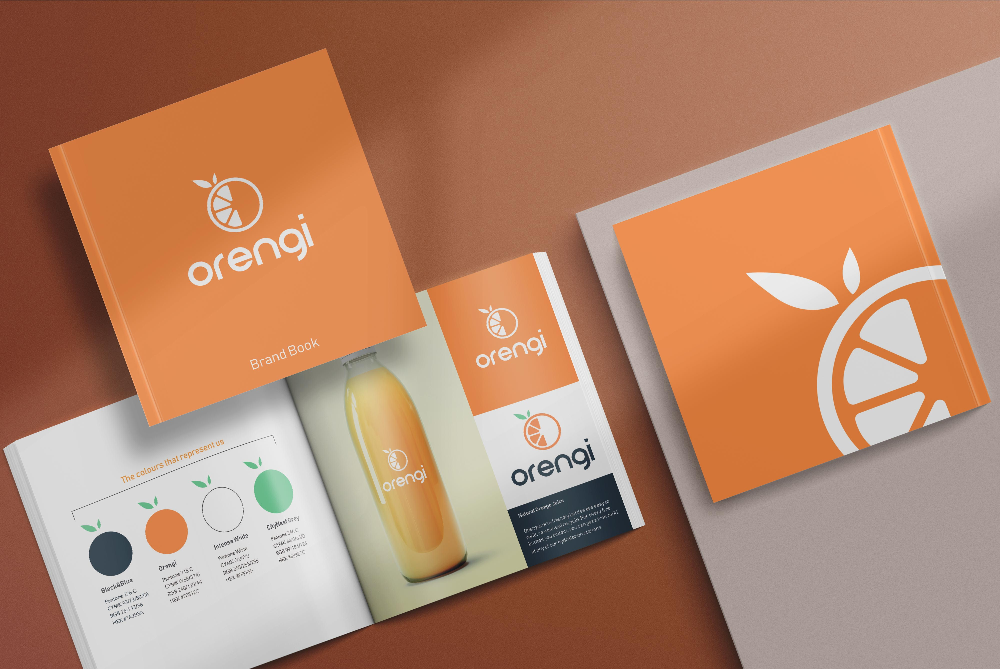
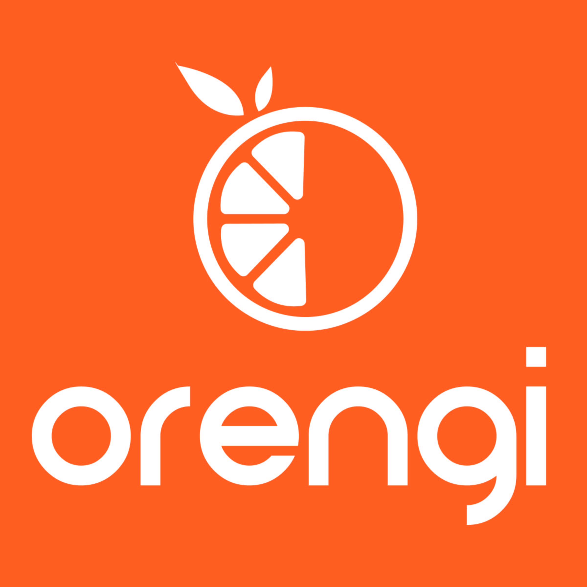
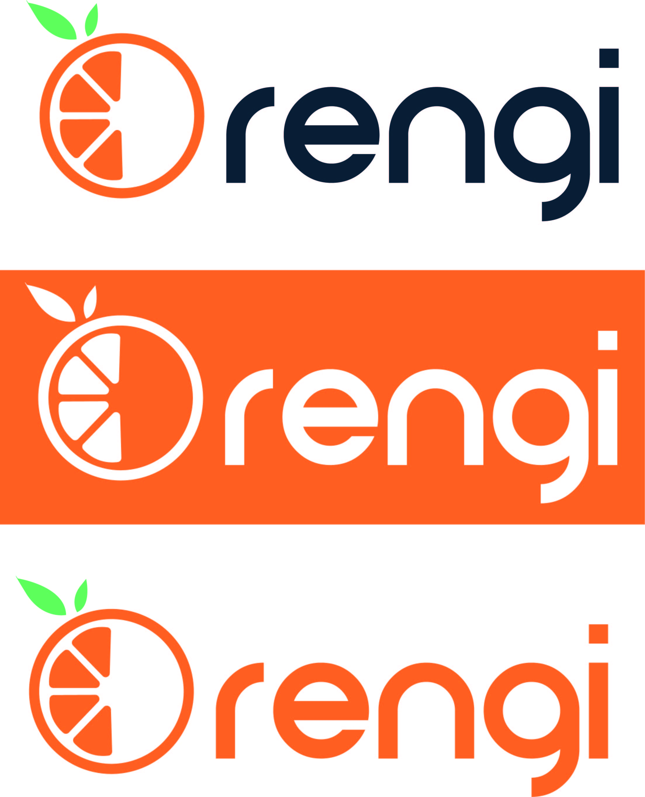
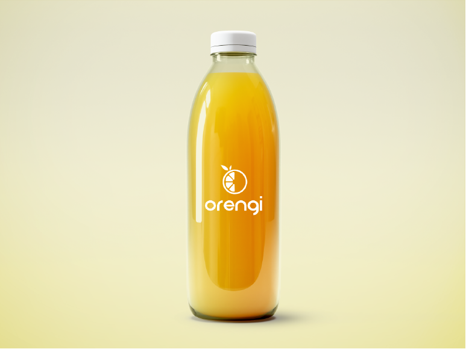

Project Objective
For this project I was required to design the brand identity & packaging for Orengi, a company that produces organic cold-pressed juices. The creative brief specified that the logo had to be fun, playful and use bright colours without looking aritificial.
 Concept
Due to the nature of the company's name, my first concept for a logo was a modified orange. After designing over 20 different oranges and trying different compositions, I chose a minimalist logo that was easy to recognize and relate to the company's activities.
Outcome
The biggest challenge during the development of this project was finding a font that conveyed the same feeling as the logo, after some trial and error I was able to find a fitting choice that didn't overpower the logo. The result is a simple, yet effective logo that can be used in different media. In addition to the original logo, some horizontal versions were created as well.
